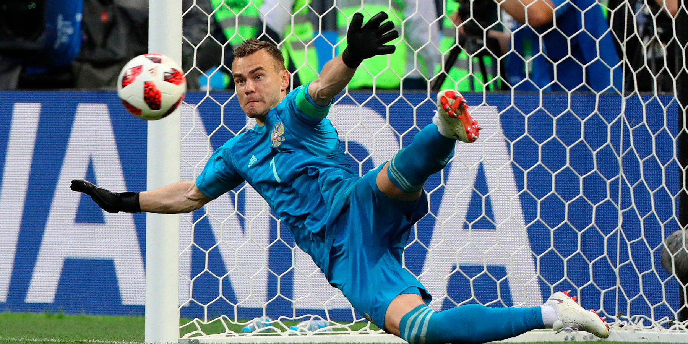

С чего всё началось
Помните, где вы были
1 июля 2018?
Я буду помнить точно. Потому что провела этот день в подвале Чебоксар.
Мы ехали на машине из Казани в Нижний Новгород — проводить обучение для волонтёров Чемпионата мира. В какой-то момент поняли, что до гостиницы не успеваем, а матч Россия — Испания пропустить невозможно. Нашли спорт-бар в подвальном помещении с большим экраном. Окон нет, на улице жара, внутри духота.
Перед серией пенальти один такой мужчина — в шортах и с золотой цепью на шее — подошёл к экрану и перекрестил его. Через пару минут Акинфеев в стиле Брюса Ли отбил пенальти. Все вскочили, а мужчина орал громче всех:
«Я знал, что сработает».
«Я знал, что сработает».
Футбол — это жизнь, говорит один из героев сериала «Тед Лассо». Лето — это маленькая жизнь, поёт Олег Митяев. А Чемпионат мира этим летом — это, получается, жизнь в квадрате.
Мы предлагаем прожить её вместе с нашим Нефутбольным образовательным клубом ЧМ-2026.
